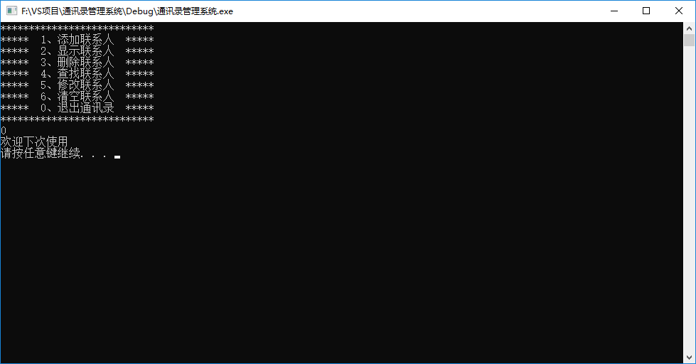

通讯录管理系统¶
你已经学会了c++入门所需的基础知识，来尝试做一个通讯录管理系统检验一下自己所学成果吧~
如果你需要项目源码，请发送邮件到主页列出的邮箱
（一定不是因为我懒得放链接） sorry about that
这是成品链接：通讯录管理系统.exe
1、系统需求¶
通讯录是一个可以记录亲人、好友信息的工具。
本教程主要利用C++来实现一个通讯录管理系统
系统中需要实现的功能如下：
- 添加联系人：向通讯录中添加新人，信息包括（姓名、性别、年龄、联系电话、家庭住址）最多记录1000人
- 显示联系人：显示通讯录中所有联系人信息
- 删除联系人：按照姓名进行删除指定联系人
- 查找联系人：按照姓名查看指定联系人信息
- 修改联系人：按照姓名重新修改指定联系人
- 清空联系人：清空通讯录中所有信息
- 退出通讯录：退出当前使用的通讯录
2、创建项目¶
创建项目步骤如下：
- 创建新项目
- 添加文件
2.1 创建项目¶
打开vs2017后，点击创建新项目，创建新的C++项目

填写项目名称，选择项目路径

2.2添加文件¶


添加成功后，效果如图：

至此，项目已创建完毕
3、菜单功能¶
功能描述： 用户选择功能的界面
菜单界面效果如下图：

步骤：
- 封装函数显示该界面 如
void showMenu() - 在main函数中调用封装好的函数
代码：
#include<iostream>
using namespace std;
//菜单界面
void showMenu()
{
cout << "***************************" << endl;
cout << "***** 1、添加联系人 *****" << endl;
cout << "***** 2、显示联系人 *****" << endl;
cout << "***** 3、删除联系人 *****" << endl;
cout << "***** 4、查找联系人 *****" << endl;
cout << "***** 5、修改联系人 *****" << endl;
cout << "***** 6、清空联系人 *****" << endl;
cout << "***** 0、退出通讯录 *****" << endl;
cout << "***************************" << endl;
}
int main() {
showMenu();
system("pause");
return 0;
}
4、退出功能¶
功能描述：退出通讯录系统
思路：根据用户不同的选择，进入不同的功能，可以选择switch分支结构，将整个架构进行搭建
当用户选择0时候，执行退出，选择其他先不做操作，也不会退出程序
代码：
int main() {
int select = 0;
while (true)
{
showMenu();
cin >> select;
switch (select)
{
case 1: //添加联系人
break;
case 2: //显示联系人
break;
case 3: //删除联系人
break;
case 4: //查找联系人
break;
case 5: //修改联系人
break;
case 6: //清空联系人
break;
case 0: //退出通讯录
cout << "欢迎下次使用" << endl;
system("pause");
return 0;
break;
default:
break;
}
}
system("pause");
return 0;
}
效果图：

5、添加联系人¶
功能描述：
实现添加联系人功能，联系人上限为1000人，联系人信息包括（姓名、性别、年龄、联系电话、家庭住址）
添加联系人实现步骤：
- 设计联系人结构体
- 设计通讯录结构体
- main函数中创建通讯录
- 封装添加联系人函数
- 测试添加联系人功能
5.1 设计联系人结构体¶
联系人信息包括：姓名、性别、年龄、联系电话、家庭住址
设计如下：
#include <string> //string头文件
//联系人结构体
struct Person
{
string m_Name; //姓名
int m_Sex; //性别：1男 2女
int m_Age; //年龄
string m_Phone; //电话
string m_Addr; //住址
};
5.2 设计通讯录结构体¶
设计时候可以在通讯录结构体中，维护一个容量为1000的存放联系人的数组，并记录当前通讯录中联系人数量
设计如下
#define MAX 1000 //最大人数
//通讯录结构体
struct Addressbooks
{
struct Person personArray[MAX]; //通讯录中保存的联系人数组
int m_Size; //通讯录中人员个数
};
5.3 main函数中创建通讯录¶
添加联系人函数封装好后，在main函数中创建一个通讯录变量，这个就是我们需要一直维护的通讯录
mian函数起始位置添加：
//创建通讯录
Addressbooks abs;
//初始化通讯录中人数
abs.m_Size = 0;
5.4 封装添加联系人函数¶
思路：添加联系人前先判断通讯录是否已满，如果满了就不再添加，未满情况将新联系人信息逐个加入到通讯录
添加联系人代码：
//1、添加联系人信息
void addPerson(Addressbooks *abs)
{
//判断电话本是否满了
if (abs->m_Size == MAX)
{
cout << "通讯录已满，无法添加" << endl;
return;
}
else
{
//姓名
string name;
cout << "请输入姓名：" << endl;
cin >> name;
abs->personArray[abs->m_Size].m_Name = name;
cout << "请输入性别：" << endl;
cout << "1 -- 男" << endl;
cout << "2 -- 女" << endl;
//性别
int sex = 0;
while (true)
{
cin >> sex;
if (sex == 1 || sex == 2)
{
abs->personArray[abs->m_Size].m_Sex = sex;
break;
}
cout << "输入有误，请重新输入";
}
//年龄
cout << "请输入年龄：" << endl;
int age = 0;
cin >> age;
abs->personArray[abs->m_Size].m_Age = age;
//联系电话
cout << "请输入联系电话：" << endl;
string phone = "";
cin >> phone;
abs->personArray[abs->m_Size].m_Phone = phone;
//家庭住址
cout << "请输入家庭住址：" << endl;
string address;
cin >> address;
abs->personArray[abs->m_Size].m_Addr = address;
//更新通讯录人数
abs->m_Size++;
cout << "添加成功" << endl;
system("pause");
system("cls");
}
}
5.5 测试添加联系人功能¶
选择界面中，如果玩家选择了1，代表添加联系人，我们可以测试下该功能
在switch case 语句中，case1里添加：
case 1: //添加联系人
addPerson(&abs);
break;
测试效果如图：

6、显示联系人¶
功能描述：显示通讯录中已有的联系人信息
显示联系人实现步骤：
- 封装显示联系人函数
- 测试显示联系人功能
6.1 封装显示联系人函数¶
思路：判断如果当前通讯录中没有人员，就提示记录为空，人数大于0，显示通讯录中信息
显示联系人代码：
//2、显示所有联系人信息
void showPerson(Addressbooks * abs)
{
if (abs->m_Size == 0)
{
cout << "当前记录为空" << endl;
}
else
{
for (int i = 0; i < abs->m_Size; i++)
{
cout << "姓名：" << abs->personArray[i].m_Name << "\t";
cout << "性别：" << (abs->personArray[i].m_Sex == 1 ? "男" : "女") << "\t";
cout << "年龄：" << abs->personArray[i].m_Age << "\t";
cout << "电话：" << abs->personArray[i].m_Phone << "\t";
cout << "住址：" << abs->personArray[i].m_Addr << endl;
}
}
system("pause");
system("cls");
}
6.2 测试显示联系人功能¶
在switch case语句中，case 2 里添加
case 2: //显示联系人
showPerson(&abs);
break;
测试效果如图：

7、删除联系人¶
功能描述：按照姓名进行删除指定联系人
删除联系人实现步骤：
- 封装检测联系人是否存在
- 封装删除联系人函数
- 测试删除联系人功能
7.1 封装检测联系人是否存在¶
设计思路：
删除联系人前，我们需要先判断用户输入的联系人是否存在，如果存在删除，不存在提示用户没有要删除的联系人
因此我们可以把检测联系人是否存在封装成一个函数中，如果存在，返回联系人在通讯录中的位置，不存在返回-1
检测联系人是否存在代码：
//判断是否存在查询的人员，存在返回在数组中索引位置，不存在返回-1
int isExist(Addressbooks * abs, string name)
{
for (int i = 0; i < abs->m_Size; i++)
{
if (abs->personArray[i].m_Name == name)
{
return i;
}
}
return -1;
}
7.2 封装删除联系人函数¶
根据用户输入的联系人判断该通讯录中是否有此人
查找到进行删除，并提示删除成功
查不到提示查无此人。
//3、删除指定联系人信息
void deletePerson(Addressbooks * abs)
{
cout << "请输入您要删除的联系人" << endl;
string name;
cin >> name;
int ret = isExist(abs, name);
if (ret != -1)
{
for (int i = ret; i < abs->m_Size; i++)
{
abs->personArray[i] = abs->personArray[i + 1];
}
abs->m_Size--;
cout << "删除成功" << endl;
}
else
{
cout << "查无此人" << endl;
}
system("pause");
system("cls");
}
7.3 测试删除联系人功能¶
在switch case 语句中，case3里添加：
case 3: //删除联系人
deletePerson(&abs);
break;
测试效果如图：
存在情况：

不存在情况：

8、查找联系人¶
功能描述：按照姓名查看指定联系人信息
查找联系人实现步骤
- 封装查找联系人函数
- 测试查找指定联系人
8.1 封装查找联系人函数¶
实现思路：判断用户指定的联系人是否存在，如果存在显示信息，不存在则提示查无此人。
查找联系人代码：
//4、查找指定联系人信息
void findPerson(Addressbooks * abs)
{
cout << "请输入您要查找的联系人" << endl;
string name;
cin >> name;
int ret = isExist(abs, name);
if (ret != -1)
{
cout << "姓名：" << abs->personArray[ret].m_Name << "\t";
cout << "性别：" << abs->personArray[ret].m_Sex << "\t";
cout << "年龄：" << abs->personArray[ret].m_Age << "\t";
cout << "电话：" << abs->personArray[ret].m_Phone << "\t";
cout << "住址：" << abs->personArray[ret].m_Addr << endl;
}
else
{
cout << "查无此人" << endl;
}
system("pause");
system("cls");
}
8.2 测试查找指定联系人¶
在switch case 语句中，case4里添加：
case 4: //查找联系人
findPerson(&abs);
break;
测试效果如图
存在情况：

不存在情况：

9、修改联系人¶
功能描述：按照姓名重新修改指定联系人
修改联系人实现步骤
- 封装修改联系人函数
- 测试修改联系人功能
9.1 封装修改联系人函数¶
实现思路：查找用户输入的联系人，如果查找成功进行修改操作，查找失败提示查无此人
修改联系人代码：
//5、修改指定联系人信息
void modifyPerson(Addressbooks * abs)
{
cout << "请输入您要修改的联系人" << endl;
string name;
cin >> name;
int ret = isExist(abs, name);
if (ret != -1)
{
//姓名
string name;
cout << "请输入姓名：" << endl;
cin >> name;
abs->personArray[ret].m_Name = name;
cout << "请输入性别：" << endl;
cout << "1 -- 男" << endl;
cout << "2 -- 女" << endl;
//性别
int sex = 0;
while (true)
{
cin >> sex;
if (sex == 1 || sex == 2)
{
abs->personArray[ret].m_Sex = sex;
break;
}
cout << "输入有误，请重新输入";
}
//年龄
cout << "请输入年龄：" << endl;
int age = 0;
cin >> age;
abs->personArray[ret].m_Age = age;
//联系电话
cout << "请输入联系电话：" << endl;
string phone = "";
cin >> phone;
abs->personArray[ret].m_Phone = phone;
//家庭住址
cout << "请输入家庭住址：" << endl;
string address;
cin >> address;
abs->personArray[ret].m_Addr = address;
cout << "修改成功" << endl;
}
else
{
cout << "查无此人" << endl;
}
system("pause");
system("cls");
}
9.2 测试修改联系人功能¶
在switch case 语句中，case 5里添加：
case 5: //修改联系人
modifyPerson(&abs);
break;
测试效果如图：
查不到指定联系人情况：

查找到联系人，并修改成功：

再次查看通讯录，确认修改完毕

10、清空联系人¶
功能描述：清空通讯录中所有信息
清空联系人实现步骤
- 封装清空联系人函数
- 测试清空联系人
10.1 封装清空联系人函数¶
实现思路： 将通讯录所有联系人信息清除掉，只要将通讯录记录的联系人数量置为0，做逻辑清空即可。
清空联系人代码：
//6、清空所有联系人
void cleanPerson(Addressbooks * abs)
{
abs->m_Size = 0;
cout << "通讯录已清空" << endl;
system("pause");
system("cls");
}
10.2 测试清空联系人¶
在switch case 语句中，case 6 里添加：
case 6: //清空联系人
cleanPerson(&abs);
break;
测试效果如图：
清空通讯录

再次查看信息，显示记录为空

至此，通讯录管理系统完成！